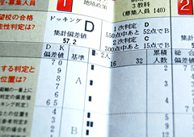

自己的尺子
不知道物品的长度或大小时，能派上用处的是"尺子"。 因为尺子可以测量大致尺寸、并通过精密的数值鲜明标示。 而另一方面，还有一种可以测量鲜度或舒适感等原本难以数值化的物品价值的"尺子"。 "3星"等评价就是吧。本次将就作为事物测定基准的"尺子"今天探讨。
测量鲜度的尺子
这是发生于2017年2月的事情。上网时发现了一条有趣的标题。"误获米歇林之星、顾客蜂拥而来的法国餐厅"。
阅读内容后发现，原来是法国中部的一家大众餐厅与一家同名店铺搞混，被登载于米歇林指南的网站版上，
导致顾客蜂拥而来。店方在接受法国巴黎当地小报采访时似乎很为难地说道，"本店并不宽敞，服务员也只有4个人"。
说到米歇林，于2007年11月发布的"东京版"曾在日本一度成为热门话题。
这是一本在欧美以外国家首次发售的"米歇林指南"，出版在发售后4天便全部售完。
发售当天的9万部销售量据说是米歇林指南史上的最好成绩。
可见该书在日本的人气之高。而更有趣的是，误登的店铺也是顾客蜂拥而来。
用餐后的人都会说"果然是米歇林上登载的店铺啊"，应该是对该店的菜肴很满意吧。
测定学力的尺子
 入学考试前的模拟考试。结果除了分数以外，还通过被称作"偏差值"的数值进行标示。 偏差值是了解自己在参加考试的团体中所具水平所需的指标。可谓测定学力的"尺子"。 为什么说偏差值可以测定学力呢？因为考试分数会因各场考试时的难易度而发生变化。 简单考试中可以获得的90分和难度考试中获得的90分，其意义完全不同。而"偏差值"则与考试的难易度无关，可以客观评估考试者的学力。 日本于1960年代中期首次将偏差值引进教育现场。当时是由一位名叫桑田昭三的中学老师引进。 桑田老师对于老师凭借个人"直觉"来决定学生升学报考学校的做法产生质疑，于是开始摸索可"客观评估"学生学力的方法。 通过对统计学的研究、以及反复试验，终于找出了"偏差值"这种概念。 曾一度被引进教育现场的"偏差值"因被视为助长"填鸭式教育""拜分主义"风气而被看作一种不良事物， 公立学校于1991年基于文部省(现在的文部科学省)方针将其废除。 但是，在升学的世界直径依然存在"偏差值"，作为测试入学前学力的"尺子"得到广泛使用。
各种尺子
 除了鲜美度和学力以外，现在还有测量各种物品的"尺子"。
例如"洗涤字数"等也是其中之一。这是一种标示今天是否适合洗衣服的物品，
根据那天的气温、湿度、风速等算出。
其他还包括测量啤酒美味程度的"啤酒指数"或"冰淇淋指数"、
"皮肤粗糙度指数""洗车指数""星空指数""杀菌指数"等举不胜举。
这些"指数"或"指标"在一些难以判断的场合将会发挥重要作用。
穿什么衣服出门、去哪儿玩、晾出衣服能否放心、
是否要带伞等问题无需凭借自己的自觉即可客观判断。
除了鲜美度和学力以外，现在还有测量各种物品的"尺子"。
例如"洗涤字数"等也是其中之一。这是一种标示今天是否适合洗衣服的物品，
根据那天的气温、湿度、风速等算出。
其他还包括测量啤酒美味程度的"啤酒指数"或"冰淇淋指数"、
"皮肤粗糙度指数""洗车指数""星空指数""杀菌指数"等举不胜举。
这些"指数"或"指标"在一些难以判断的场合将会发挥重要作用。
穿什么衣服出门、去哪儿玩、晾出衣服能否放心、
是否要带伞等问题无需凭借自己的自觉即可客观判断。
尺子的陷阱
一直以来，很多人在选择餐厅时都会查看美食网站的星级。
在网上购买书籍时，也会关注星级和评论。
而今天，无论是选择用餐的餐厅、还是升学报考的学校，
作为判断基准的"尺子"都将会发挥重要作用。
此外，我认为这种倾向今后还将更加鲜明。
当今社会，好坏等各种消息随处泛滥。
信息量一旦增加，将会导致信任对象难以判断，
于是只能关注"评级机构"评出的客观评论。但是，这里就是陷阱。
因为作为判断标准的"尺子"反而可能会被滥用。
美食网站的评论最多只能在选择美食餐厅时发挥作用。
"口碑好所以好吃"这种意识可谓本末倒置了吧。
在当今的信息化社会，有时也会出现将"评级"视为"权威"的危险意识。
就在几年前，因某国国债"评级"下调，导致了世界各地经济的混乱。
"指数"或"指标"最多只可作为物品选择时的一种参考数值。
正是因为当前是一个可通过智能手机或网络即可轻松获得各种信息的时代，
所以才需要一把可以让自己不被周围评价困惑的"自己的尺子"。